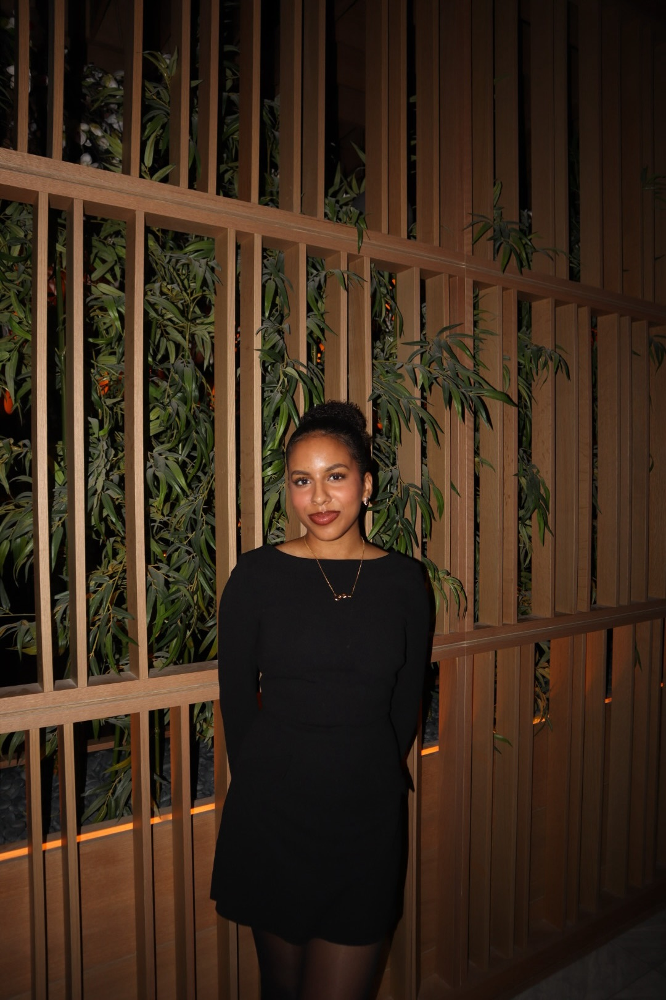
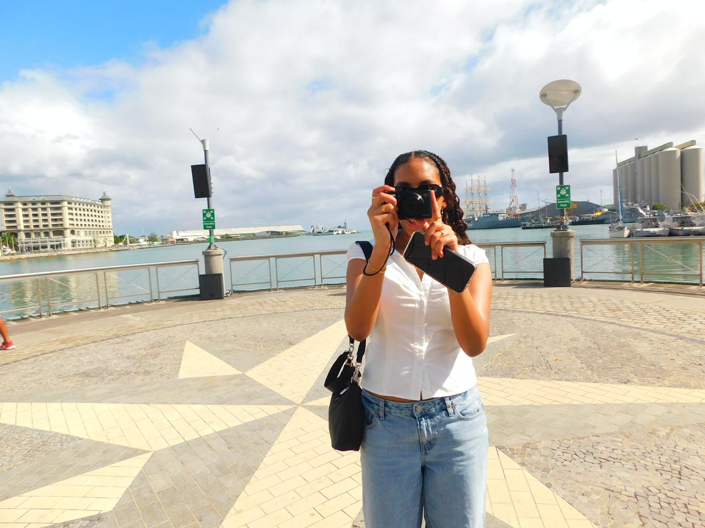
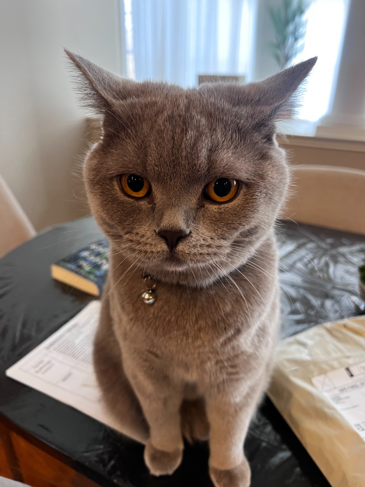

Hi, I’m Saja.
I’m a Sudanese American UX designer studying human-computer interaction at the University of Maryland. At UConn, I studied cognitive science and software design. I’ve always liked asking why people do things the way they do.
I got to ask some of those questions during fieldwork in Mauritius. Closer to home, designing Nile Health Network let me work in English and Arabic on a project that’s personal to my family.

Outside of design
I’m usually playing tennis, doing Pilates, or getting a matcha. When I travel, I like to bring my camera.

Meet Mylo
My British Shorthair.

Contact
Interested in working together? Get in touch.
saja2004.lutfi@gmail.com